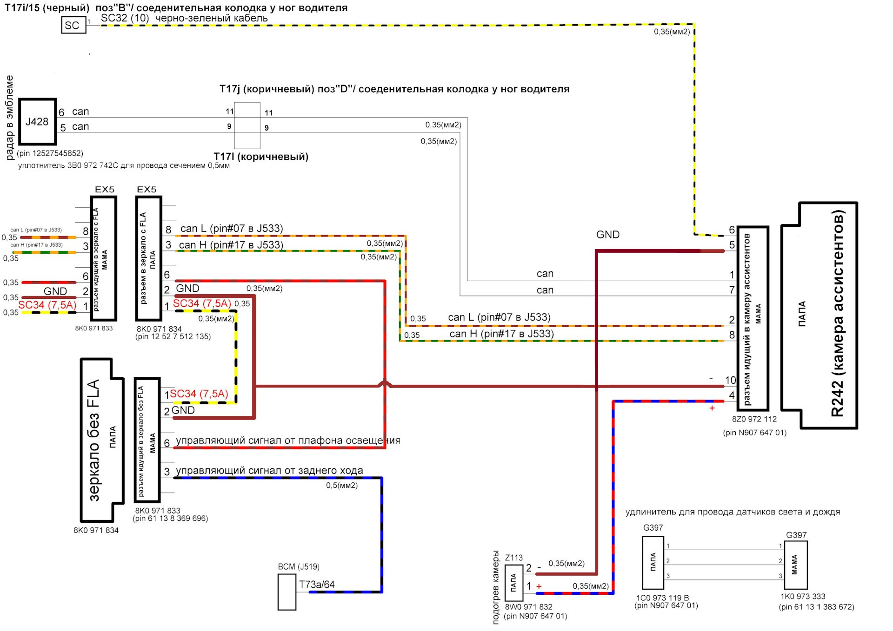
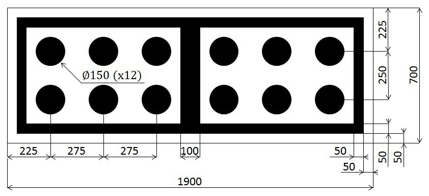
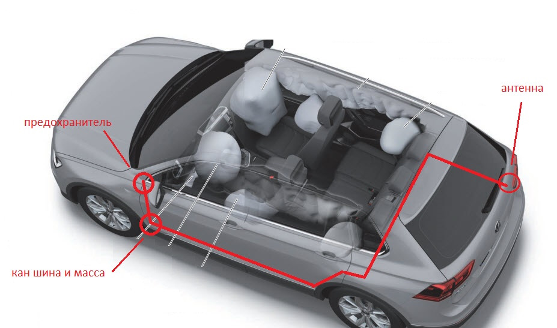
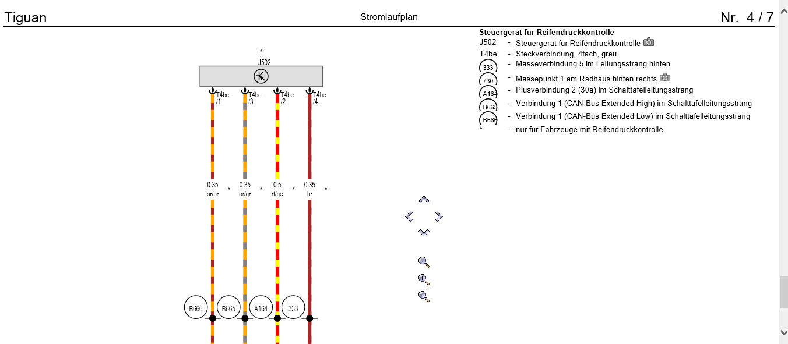

Дооснащение¶
Камера ассистентов¶
Оборудование:
1. Камера ассистентов
2. Кожух
3. Безрамочное зеркало без FLA
4. Кожух для крепления зеркала
5. Проводка
Схема подключения:
1 пин камера А5 (R242) -→ 6 пин радара АСС (J428)
7 пин камера А5 (R242) -→ 5 пин радара АСС (J428)
6 пин — "+"
5 пин — "-"
2 пин — Can extended low - 8 пин в разъеме зеркала
8 пин — Can extended high - 3 пин в разъеме зеркала
4 пин — плюсовой провод обогревателя камеры
10 пин — минусовой провод обогревателя камеры
Схема

Макет для калибровки

Сенсорная панель климата¶
Блок 08 → Кодирование:
Climate_style → display на Anzeige Front und Heck
→ Применить (с перезагрузкой блока)
Блок 08 → Адаптация:
Detection_time_tap:
- par_Detection_time_tap: 600 ms
Detection_time_hold:
- par_Detection_time_hold: 600 ms
Off_time_neighbor_key_during_sliding:
- par_Off_time_neighbor_key_during_sliding: 400 ms
Sensitivity_touch:
- par_Sensitivity_touch: 0
Steps_temp_slider:
- par_Steps_temp_slider: 8
Step_size_temp_slider:
- par_Step_size_temp_slider: 0.5°C
22_degree_jump_temp_slider:
- par_22_degree_jump_temp_slider: not_active
Flick_function_temp_slider:
- par_Flick_function_temp_slider: not_active
Profile_selection_touch:
- par_Profile_selection_touch: 0
dimming_characteristic_new_1:
- X1: 0
- Y1: 16
- X2: 10
- Y2: 16
- X3: 50
- Y3: 60
- X4: 100
- Y4: 125
- X5: 150
- Y5: 500
- X6: 253
- Y6: 1,000
dimming_characteristic_new_2:
- X1: 0
- Y1: 0
- X2: 10
- Y2: 100
- X3: 25
- Y3: 250
- X4: 50
- Y4: 500
- X5: 75
- Y5: 750
- X6: 100
- Y6: 1,000
dimming_characteristic_new_3:
- X1: 0
- Y1: 6
- X2: 10
- Y2: 6
- X3: 50
- Y3: 12
- X4: 100
- Y4: 25
- X5: 150
- Y5: 100
- X6: 253
- Y6: 300
dimming_characteristic_new_4:
- X1: 0
- Y1: 20
- X2: 10
- Y2: 20
- X3: 50
- Y3: 60
- X4: 100
- Y4: 120
- X5: 150
- Y5: 800
- X6: 253
- Y6: 1,000
dimming_characteristic_new_5:
- X1: 0
- Y1: 10
- X2: 10
- Y2: 10
- X3: 50
- Y3: 50
- X4: 100
- Y4: 100
- X5: 150
- Y5: 1,000
- X6: 253
- Y6: 1,000
dimming_characteristic_new_6:
- X1: 0
- Y1: 4
- X2: 10
- Y2: 4
- X3: 50
- Y3: 15
- X4: 100
- Y4: 30
- X5: 150
- Y5: 600
- X6: 253
- Y6: 1,000
dimming_characteristic_new_7:
- X1: 0
- Y1: 20
- X2: 10
- Y2: 20
- X3: 50
- Y3: 50
- X4: 100
- Y4: 100
- X5: 150
- Y5: 800
- X6: 253
- Y6: 1,000
dimming_characteristic_new_8:
- X1: 0
- Y1: 8
- X2: 10
- Y2: 8
- X3: 50
- Y3: 20
- X4: 100
- Y4: 25
- X5: 150
- Y5: 600
- X6: 253
- Y6: 1,000
dimming_characteristic_new_9:
- X1: 0
- Y1: 14
- X2: 10
- Y2: 14
- X3: 50
- Y3: 32
- X4: 100
- Y4: 41
- X5: 150
- Y5: 800
- X6: 253
- Y6: 1,000
dimming_characteristic_new_10:
- X1: 0
- Y1: 10
- X2: 10
- Y2: 10
- X3: 50
- Y3: 25
- X4: 100
- Y4: 50
- X5: 150
- Y5: 800
- X6: 253
- Y6: 1,000
damping_dimming_characteristic_01:
- PWM_Daempfung_Aufdimmen: 0.2 s
- PWM_Daempfung_Abdimmen: 0.1 s
damping_dimming_characteristic_02:
- PWM_Daempfung_Aufdimmen: 0.2 s
- PWM_Daempfung_Abdimmen: 0.1 s
damping_dimming_characteristic_03:
- PWM_Daempfung_Aufdimmen: 0.2 s
- PWM_Daempfung_Abdimmen: 0.1 s
damping_dimming_characteristic_04:
- PWM_Daempfung_Aufdimmen: 0.2 s
- PWM_Daempfung_Abdimmen: 0.1 s
Sun_sensor_supplier_differentiation:
- par_Sun_sensor_supplier_differentiation: none
→ Применить
Датчик влажности¶
Датчик 3Q0907643 ставится вместо штатного датчика грязного воздуха
Блок 08 → Кодирование:
Байт 9 – Бит 4-5 (10 - Датчик влажности наружнего воздуха установлен / Sensor_for_air_humidity_outside): Активировать
Reduction of window misting outside at high humidity: Matching glass temperature model
→ Применить (с перезагрузкой блока)
Блок 08 → Адаптация:
Reduction of window misting outside at high humitity:
- param_Reduction_of_window_misting_outside_at_high_humitity: Matching coding
→ Применить
DYNAUDIO¶
Блок 19 → Адаптация:
Installation list - specified installations:
- Sound System: Not coded
- Digital Sound System Control Module: Yes
GW_Enable_CAN_Timeout_DTC:
- Sound System: Enabled
→ Применить
Блок 5F → Кодирование:
byte_4_Channel_1_HT: not_installed
byte_4_Channel_1_TT: not_installed
byte_4_Channel_2_HT: not_installed
byte_4_Channel_2_TT: not_installed
byte_4_Channel_3_HT: not_installed
byte_4_Channel_3_TT: not_installed
byte_4_Channel_4_HT: not_installed
byte_4_Channel_4_TT: not_installed
byte_5_Channel_5_HT: not_installed
byte_5_Channel_5_TT: not_installed
byte_5_Channel_6_HT: not_installed
byte_5_Channel_6_TT: not_installed
byte_5_Channel_7_HT: not_installed
byte_5_Channel_7_TT: not_installed
byte_5_Channel_8_HT: not_installed
byte_5_Channel_8_TT: not_installed
byte_6_Channel_9_HT: not_installed
byte_6_Channel_9_TT: not_installed
byte_6_Channel_10_HT: not_installed
byte_6_Channel_10_TT: not_installed
byte_6_Channel_11_HT: not_installed
byte_6_Channel_11_TT: not_installed
byte_6_Channel_12_HT: not_installed
byte_6_Channel_12_TT: not_installed
byte_7_Channel_13_HT: not_installed
byte_7_Channel_13_TT: not_installed
byte_7_Channel_14_HT: not_installed
byte_7_Channel_14_TT: not_installed
byte_7_Channel_15_HT: not_installed
byte_7_Channel_15_TT: not_installed
byte_7_Channel_16_HT: not_installed
byte_7_Channel_16_TT: not_installed
byte_11_Sound_System: Sound_System_external_MOST
→ Применить (с перезагрузкой блока)
Блок 5F → Адаптация:
Sound System: yes
Startup_screen_sticker_HMI: 2
Car_Function_List_BAP_Gen2:
- Amplifier_0x2D: not activated
- Amplifier_0x2D_msg_bus: Databus Infotainment
→ Применить
[PR-KA1] [PR-KA2] Камера заднего вида¶
Подключение проводов
- Плюс клемма 30 берется в разъеме Quadlock красный или красно желтый толстый
- Масса берется в разъеме Quadlock коричневый толстый
- Кан шина инфотеймент — Сигнал от камеры
- К пину под номером 12 должна быть подключена "оплётка"/экран видео-кабеля от камеры — черный провод
- К пину под номером 6 - центральная жила того же кабеля — белый провод
- Это самые крайние пины для синего разъёма.
- Оранжево-фиолетовый — к оранжево-фиолетовому Quadlock — серый разъем 6 контакт
- Оранжево-коричневый — к оранжевому коричневому Quadlock — серый разъем 12 контакт
ОБЯЗАТЕЛЬНО ЗАКРЫВАЙТЕ БАГАЖНИК ПРИ ПРОВЕРКЕ!
Блок 19 → Список оборудования:
6C (КАМЕРА): установлено
→ Применить
Блок 5F → Кодирование:
Байт 19 – Бит 4 (byte_19_Rear_View_Low): Деактивировать
→ Применить
Блок 5F → Адаптация:
Car_Function_List_BAP_Gen2:
- VPS_0x0B: Активировать
- VPS_0x0B_msg_bus: Databus заменить на Infotainment
→ Применить
Настройка парковочного ассистента
Блок 76 → Кодирование:
Байт 2 – Бит 4-5 (10 - Camera Type: Rear View Camera (RVC)): Активировать
→ Применить (с перезагрузкой блока)
Если калибровка камеры не сделана — будет висеть ошибка — отсутствуют базовые параметры.
Установка китайской камеры
К ГУ можно так же подключить и китайскую камеру без поддержки траекторий. Но в этом случае необходимо будет поправить ряд кодировок:
Блок 5F → Кодирование:
Байт 19 – Бит 4 (byte_19_Rear_View_Low): Активировать
→ Применить
Блок 5F → Адаптация:
Car_Function_List_BAP_Gen2
- VPS_0x0B: Деактивировать
→ Применить
Макет для калибровки

Задние ручки kessy¶
Оборудование:
— ручки 510837205G 510837206G
— проводка от Тигуана в сборе от передних дверей
— разъём в ответную часть проводки
— пины в дверные разъёмы по 6 штук 12527545852 и 12527512135
— пины в блок kessy 6 штук N90764701
Схема подключения правой двери:

Схема подключения левой двери:

Принцип укладки проводки:
1. От ручек по 4 провода - 3 до блока kessy, 1 на массу.
2. Через резиновую муфту в обшивке необходимо протянуть 3 провода от ручек.
3. Далее провода идут через гофру до дверного разъема.
4. От разъема провода идут в блок kessy.
Шаги:
1. Разобрать двери (скинуть обшивку), демонтировать старые и установить новые ручки по инструкции из ELSA, вытянуть провод из "мокрой" части двери наружу, уложив его так, чтобы его не цепляло стекло при опускании.
2. Протянуть по 3 провода из готовой проводки от ручек до разъема двери, массу примотал к массе на блоках дверей, смотать все с заводской косой и запиновать разъемы между дверью и стойкой, для этого необходимо частично демонтировать проводку из двери.
3. Пинуем провода в разъемы задних дверей.
4. Пинуем ручки в разъемы стоек.
5. По порогу и по жгуту проводки подсветки ног прокладываем провода от стойки двери до блока Kessy и пинуем блок по инструкции.
Блок В7 → Кодирование:
Байт 0 – Бит 2 (Дверная ручка kessy слева на двери сзади слева, Activation of Kessy door handle, left rear door): Активировать
Байт 0 – Бит 3 (Дверная ручка kessy слева на двери сзади справа, Activation of Kessy door handle, right rear door): Активировать
Байт 1 – Бит 2 (Пассивный выход для двери сзади слева отключен, Passive entry left rear door handle): Деактивировать
Байт 1 – Бит 3 (Пассивный выход для двери сзади справа отключен, Passive entry right rear door handle): Деактивировать
→ Применить
[PR-7Y1,7Y5] Side Assist - система контроля слепых зон¶
Существуют 2 типа радаров. С 2020 года поставляются радары, с которых не надо снимать защиту компонентов и делать калибровку
Параметрии:
| ID оборудования | Прошивка | Параметрия (ODIS XML) |
|---|---|---|
| 2Q0907685B / 2Q0907686B | (Скачать) | (Скачать) |
| 2Q0907685C / 2Q0907686C | (Скачать) | (Скачать) |
Блок 19 → Список оборудования:
3C (Система смены полосы движения): установлено
CF (Система смены полосы движения): установлено
Gateway_Component_List:
- Node_0x4E: coded
- Node_0x8A: coded
→ Применить
Блок 17 → Кодирование:
Lane_change_assistant: yes
Lane_change_assistant_BAP: yes
→ Применить (с перезагрузкой блока)
Блок 13 → Кодирование:
Control_module_for_lane_assistance: installed
Lane_change_support: Активировать
→ Применить (с перезагрузкой блока)
Блок 03 → Кодирование:
Байт 29 – Бит 7: Активировать (1ХХХХХХХ)
→ Применить (с перезагрузкой блока)
Блок 5F → Кодирование:
Car_Function_List_BAP_Gen2:
- SWA_0x1A: Активировать
- SWA_0x1A_msg_bus → Дополнительная шина данных (CAN_Extended)
Car_Function_Adaptations_Gen2:
- menu_display_lane_assistant: Активировать
- menu_display_lane_assistant_over_threshold_high: Активировать
Кодирование системы кругового обзора (если есть)
Блок 6C → Кодирование:
equipment_RTA: installed
→ Применить (с перезагрузкой блока)
Блок 76 → Кодирование:
Rear_Cross_Traffic: Alert: mit RCTA
→ Применить (с перезагрузкой блока)
Блок A5 → Кодирование:
SWA: Coded
→ Применить (с перезагрузкой блока)
Блок 3C → Кодирование:
Pre_Sense: without_Pre_Sense
Rear_Cross_Traffic_Alert: with_RCTA
ECU for draw bar: no ECU for draw bar
steering: left-hand drive
Rear_Axle_Steering: without_Rear_Axle_Steering
Lane_Departure_Warning_System: with_Lane_Departure_Warning_System
Front_Sensors_Driver_Assistance_System: with_Front_Sensors_Driver_Assistance_System
Diagnosis_RCTA: tone_via_PLA
→ Применить (с перезагрузкой блока)
Автосвет¶
Для этого необходим новый переключатель 5G0941431BD и датчик света и дождя 5Q0955547C
Установка переключателя
Блок 09 → Адаптация:
Aussenlicht_uebergreifend:
- LDS_mit_AFL: Yes
→ Применить
Установка датчика света и дождя
Блок 09 → Адаптация:
Lighting_Assist_Adaptation:
- Regen_Lichtsensor: LIN_Regen_Licht_Sensor
- Feuchtesensor: Installed (если есть датчик влажности)
После этих кодировок датчик света и дождя появляется в кодировании 9 блока. Прописываем в него кодировку:
Блок 09 → Кодирование → Подблок RLНS:
- 3СА8DD — фары включаются не так поздно, где то при 1200lx
- 3CA8D7 — фары включаются совсем поздно, при 800lx
[PR-7K3] [PR-7K3] Direct RDKS/TPMS - система прямого контроля давния в шинах¶
RDKS (Reifen Druck Kontrolle System) или TPMS (Tires Pressure Monitoring System)
Параметрия:
| ID оборудования | Параметрия (ODIS XML) |
|---|---|
| 5Q0907273B | (Скачать) |
Необходимые действия
- Установка антенны системы RDKS (5Q0907273B) в правом заднем крыле (штатное место под бампером)
- Прокладка проводки, подключение к питанию и CAN шине
- Установка датчиков давления (5Q0907275B)
- Загрузка параметрии в антенну, кодирование систем автомобиля

Схема из ELSA (используются 4 провода — питание 12в, масса и провода каншины CAN Ext High и Low) 
CAN шина находится в районе ручки открытия капота, за накладкой. Фишка T17a и пины 12 (CAN High) и 13 (CAN Low)
 Питание идет от блока предохранителей. Если "родной" 7-й предохранитель занят, то можно использовать свободный 45-й или 38-й.
Питание идет от блока предохранителей. Если "родной" 7-й предохранитель занят, то можно использовать свободный 45-й или 38-й.
Кодирование
Блок 19 → Список оборудования:
65 (Блок управления системы контроля давления в шинах): установлено
→ Применить
Отключение косвенного давления, если было активировано
Блок 03 → Кодирование:
Байт 27 – Биты 4,5,6: Деактивировать
Байт 28 – Бит 7: Деактивировать
→ Применить (с перезагрузкой блока)
Блок 17 → Кодирование:
Байт 4 – Бит 0 (Indirect Tire Pressure Monitoring System(TPMS) installed / Индикатор контроля давления в шинах): Деактивировать
→ Применить (с перезагрузкой блока)
Активация RDKS
Блок 17 → Кодирование:
Байт 3 – Бит 7 (Direct Tire Pressure Monitoring System(TPMS) installed / Индикатор контроля давления в шинах): Активировать
Байт 11 - Бит 2 (Direct Tire Pressure Monitoring System(TPMS) BAP installed): Активировать
→ Применить (с перезагрузкой блока)
Активация в меню магнитолы
Блок 5F → Адаптация:
Car_Function_Adaptations_Gen2:
- menu_display_rdk: Активировать
- menu_display_rdk_over_threshold_high: Активировать
→ Применить
---
Car_Function_List_BAP_Gen2:
- tire_pressure_system_0x07: Активировать
- tire_pressure_system_0x07_msg_bus: CAN_Extended
→ Применить
Для активации системы после кодирование необходимо проехать примерно 1 километр